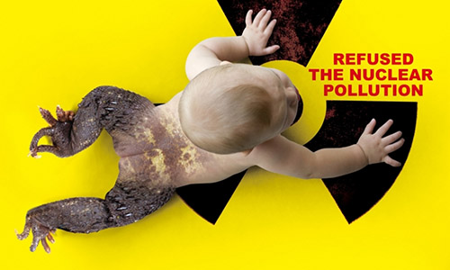

核污染是指由于各种原因产生核泄漏甚至爆炸而引起的放射性污染。其危害范围大，对周围生物破坏极为严重，持续时期长，事后处理危险复杂。
1986年4月25日，前苏联切尔诺贝利核电站发生核泄漏事故，爆炸时泄漏的核燃料浓度高达60％，且直至事故发生10昼夜后反应堆被封存，放射性元素一直超量释放。事故发生3天后，附近的居民才被匆匆撤走，但这3天的时间已使很多人饱受了放射性物质的污染。在这场事故中当场死亡2人，至1992年，已有700O多人死于这次事故的核污染。这次事故造成的放射性污染遍及前苏联15万平方公里的地区，那里居住着694．5万人。 由于这次事故，核电站周围30公里范围被划为隔离区，附近的居民被疏散，庄稼被全部掩埋，周围7千米内的树木都逐渐死亡。在日后长达半个世纪的时间里，10公里范围以内将不能耕作、放牧；10年内100公里范围内被禁止生产牛奶当年发生事故后的切尔诺贝利核电站。不仅如此，由于放射性烟尘的扩散，整个欧洲也都被笼罩在核污染的阴震中。临近国家检测到超常的放射性尘埃，致使粮食、蔬菜、奶制品的生产都遭受了巨大的损失。核污染给人们带来的精神上、心理上的不安和恐惧更是无法统计。 事故后的7年中，有7000名清理人员死亡，其中1／3是自杀。参加医疗救援的工作人员中，有40％的人患了精神疾病或永久性记忆丧失。时至今日，参加救援工作的83．4万人中，已有5．5万人丧生，七万人成为残疾，30多万人受放射伤害死去。 海洋被誉为“国防的前线、贸易的通道、资源的宝库、云雨的故乡、生命的摇篮”。然而，她正受到严重的污染，常见的主要有漂浮物污染和有机化合物污染及其引起的赤潮、黑潮。海洋污染直接导致海洋环境的恶化，生物品种的减少。 随着社会经济的发展，人口的不断增长，在生产和生活过程中产生的废弃物也越来越多 。这些废弃物的绝大部分最终直接或间接地进入海洋。当这些废物和污水的排放量达到一定的限度，海洋便受到了污染。诸如海洋油污染、海洋重金属污染、海洋热 污染、海洋放射性 污染等等。受到污染的海域，会造成损害海洋生物，危害人类健康、妨碍人类的海洋生产活动、损害海水使用质量、造成优美环境的破坏等。 |